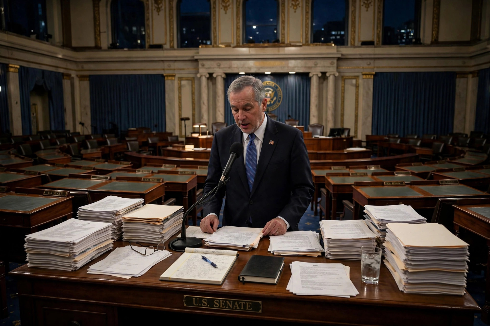

From Wikipedia, the free encyclopedia
| Talking filibuster | |
|---|---|
| Type | Legislative tactic |
| Setting | United States Senate and some state legislatures |
| Longest | Strom Thurmond, 24 hours 18 minutes (1957) |
| Ended by | Cloture vote or exhaustion of speakers |

A talking filibuster is a form of filibuster in which one or more legislators hold the floor by speaking continuously, in order to delay or block a vote. It is the classic, physically demanding form of the practice in the United States Senate, as opposed to the modern "silent" filibuster, in which the mere threat of extended debate forces the majority to assemble sixty votes for cloture before proceeding.
A senator recognized by the presiding officer may speak indefinitely unless cloture is invoked, but must remain standing, may not leave the floor, and must speak on the topic under consideration intermittently enough to satisfy the presiding officer. Speakers have read from telephone books, recipes, and statutes—Strom Thurmond read the election laws of the states during his record 1957 speech against the Civil Rights Act—and Rand Paul's 2013 filibuster on drone policy and Ted Cruz's 21-hour 2013 speech against the Affordable Care Act revived the genre for modern audiences. Under Senate practice since the 1970s, leadership usually "tracks" filibustered business aside and moves to other matters, so a talking effort is now more a media and pressure tactic than a true blockade.
Reformers have periodically proposed returning to a mandatory talking filibuster—requiring opponents to hold the floor publicly, and allowing a majority to proceed once debate is exhausted—arguing it would restore the filibuster's deliberative purpose while preventing routine obstruction. Such proposals featured in Senate rules debates in 2021–2022 but did not pass, in part because they might interact unpredictably with the precedents set by the nuclear option.
The talking filibuster was famously dramatized in the 1939 film Mr. Smith Goes to Washington, in which James Stewart's character collapses after a day-long speech, an image that shaped public understanding of the tactic.